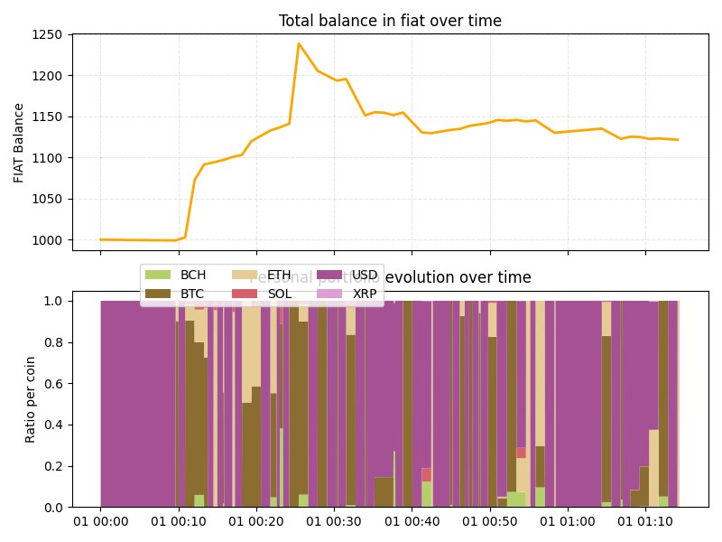
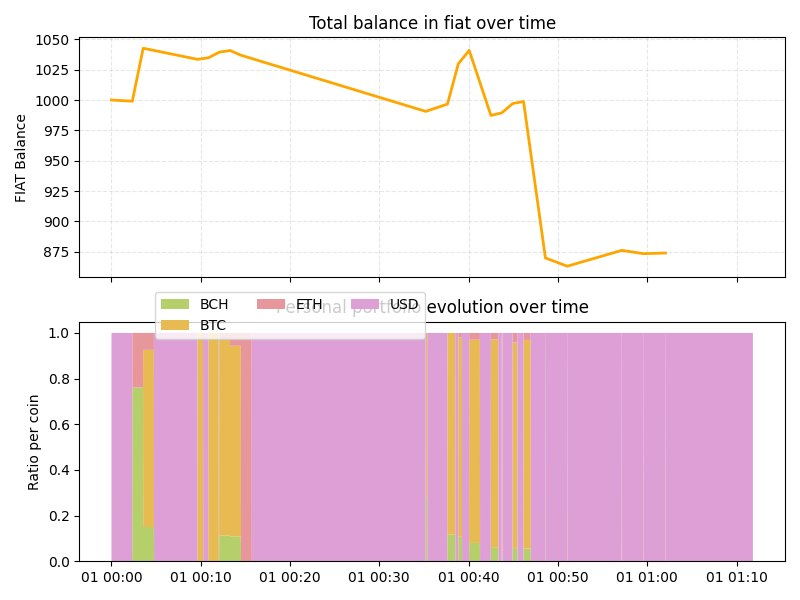
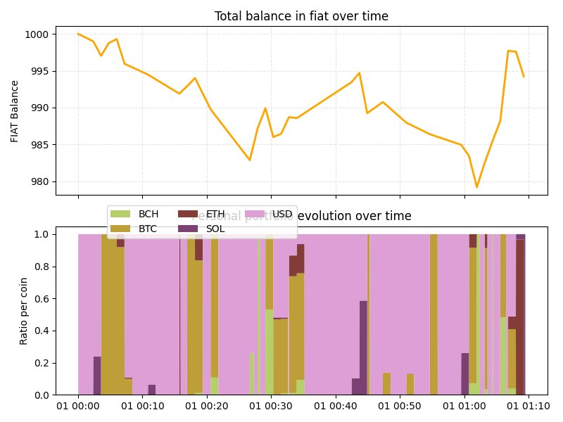

All tests were run with the following sample: USDC, BTC, XRP, ETH, BCH, SOL and DOGE. The selection includes stablecoins, memecoins, and established assets like Bitcoin, giving the bot a representative range to work with.
Initial balance is $1,000 across all tests, with a 0.1% operational fee, in line with what major exchanges typically charge. This fee is not charged by I&F — it reflects real-world trading costs so the results are honest.
Please bear in mind, these results come from the current state-of-the-art. We are continuously working on improvements, focusing on capital preservation rather than aggressive trading.
You can run your own backtests directly from the Telegram Bot.
Following the US elections and renewed expectations around federal crypto reserves, the market entered a clear uptrend. The bot would have grown your $1,000 to $1,121.58, a gain of +12.5%.

When COVID-19 hit global markets, crypto was no exception. The bot shifted into defensive mode, limiting the damage. Your $1,000 would have dropped to $874, a loss of -12.6%, significantly less than the broader market crash.

Analysts called this period a crab market: There was no clear direction and trends were mostly noise. The bot stayed cautious, ending with $994.24, which was a minimal loss of -0.57%.
